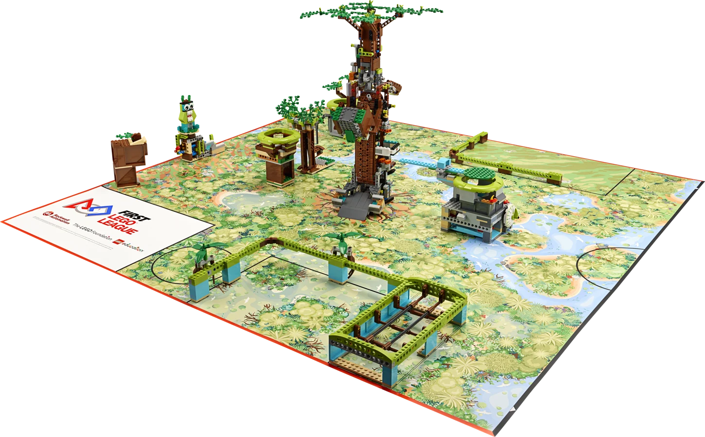

A temporada · 2026 / 2027
BIOGLOW™
A biodiversidade dá o mote à temporada. No jogo da Future Edition, o campo é uma floresta tropical e cada missão mexe com o equilíbrio do ecossistema.

Future Edition · Percurso 8–16
Das raízes à copa.
A grande árvore também faz parte do jogo. Na missão Roots of Renewal, a equipa entrega recursos na base e aciona o mecanismo que os leva até à copa. Os recursos que chegam à copa por esse percurso valem dez pontos cada.
Quando as duas equipas pontuam
No refúgio central, as duas equipas podem entregar espécies-chave e recursos. No fim da ronda, ambas recebem os pontos conquistados em conjunto.
Ver as missões ilustradas (PDF em inglês) ↗O filme · Future Edition
Vê o campo
em ação.
Acompanha as equipas de perto no vídeo de apresentação da Future Edition.
Para preparar a temporada
Materiais para a equipa
Escolhe Founders ou Future na biblioteca da LEGO Education para consultar o caderno da equipa, as instruções de construção e os materiais do teu percurso.